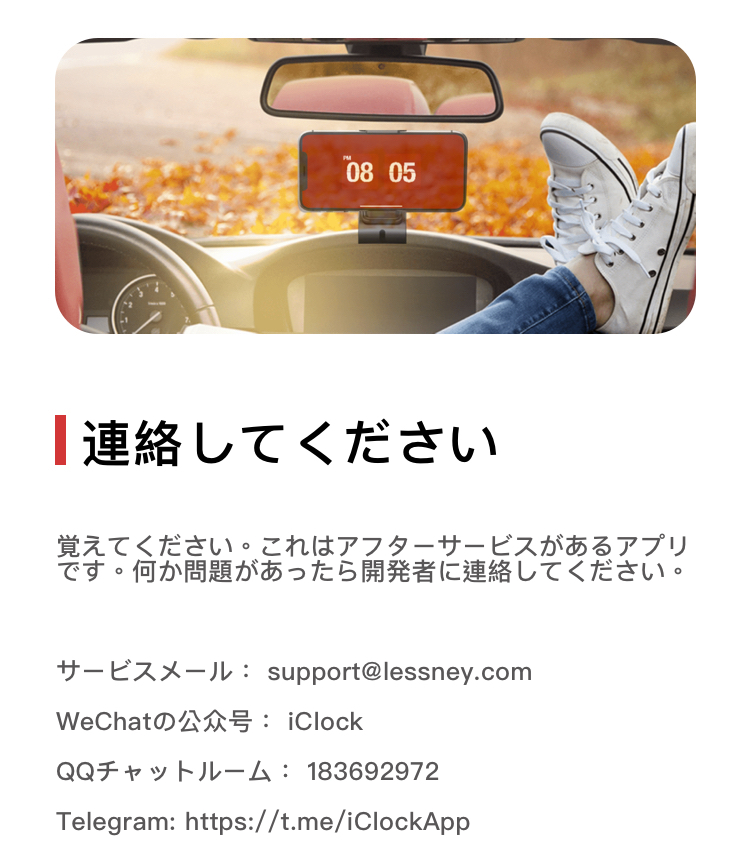
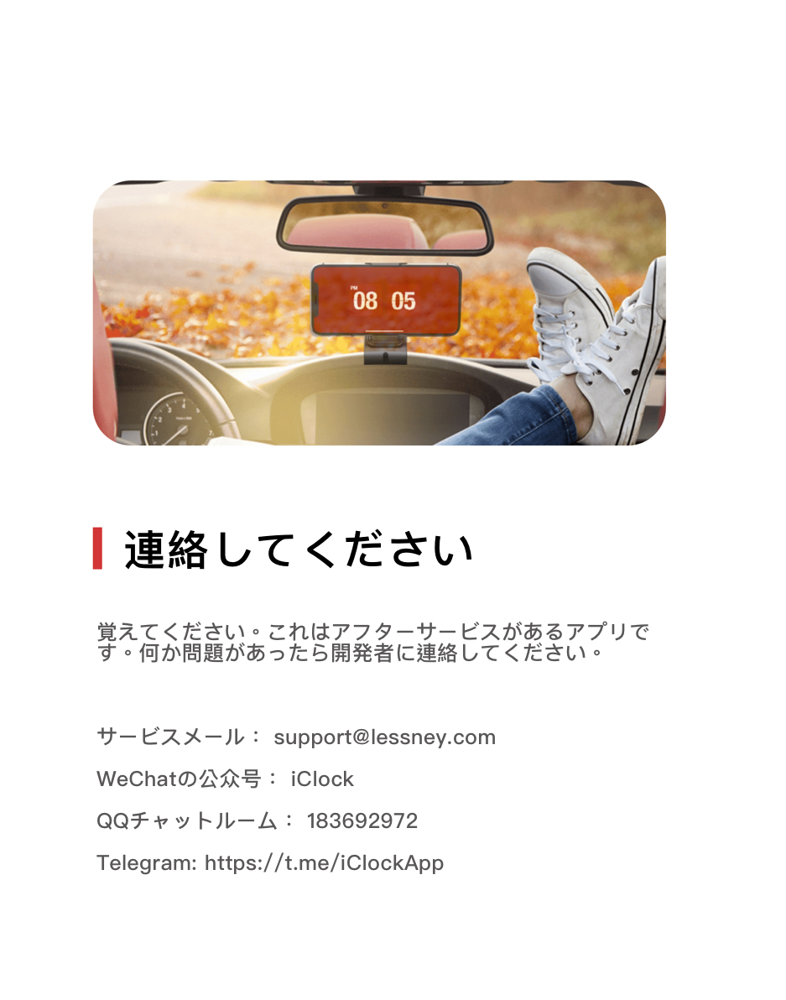

一つは、「難癖をつける」を満たすためのページ時計とタスクアラーム」
デザインは極めてシンプルで、カスタム配色、ジェスチャー操作に対応しています。ベッドの上に置いて、デスクの上でデジタル時計として使うのに適しています。今では多くの人がパソコンに向かなくなりました。iPadやiPhoneを時計として使うのは環境保護で完璧なことではないですか？

Telegram
Twitter
Facebook
Developer
